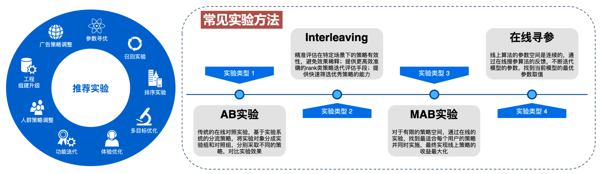
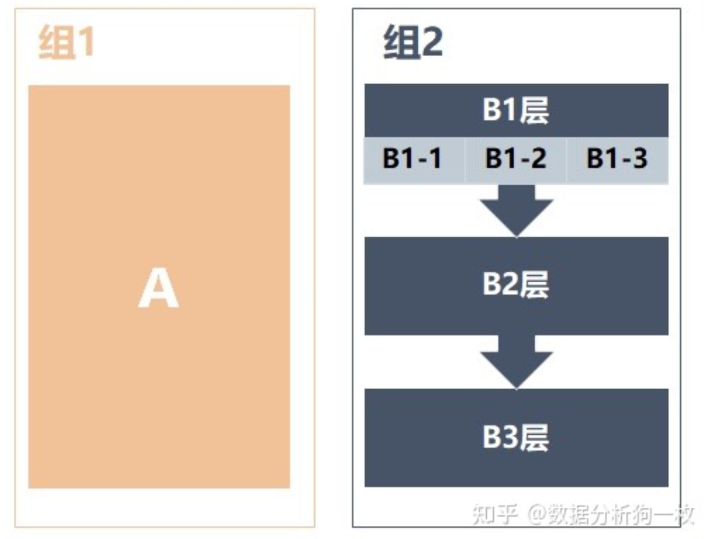
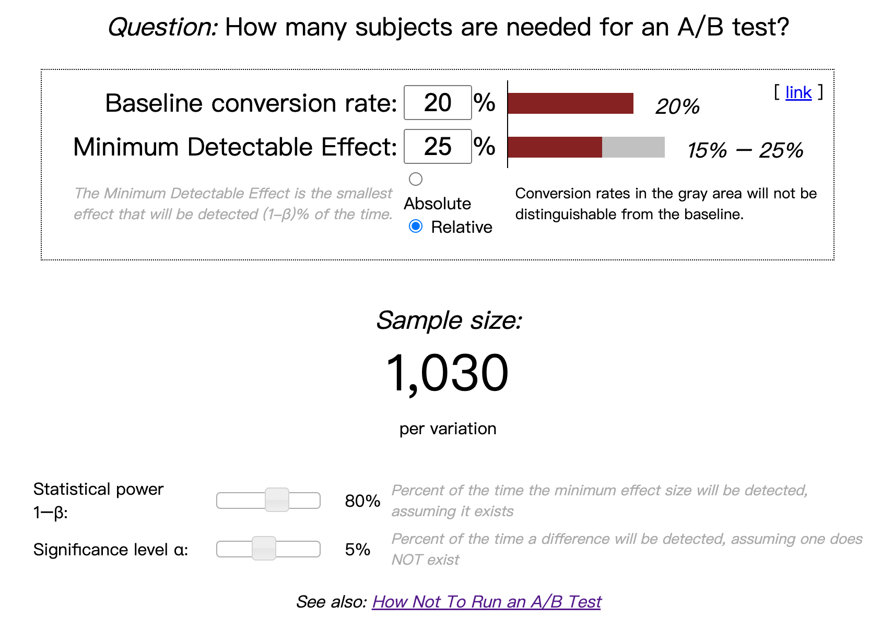
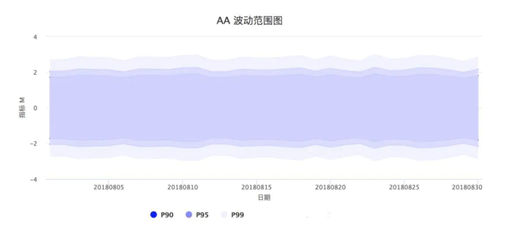
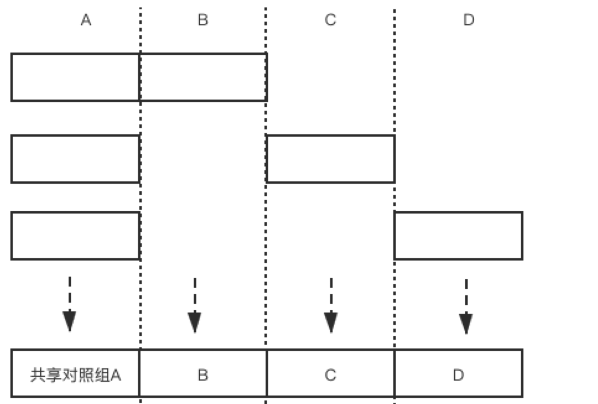

AB Test
Contents
AB Test¶
基本概念¶
Overview¶
定义：AB testing (controlled experiments) is a type of experiment with two variants, A and B, which are the control and variation in a controlled experiment.
关键点：实验是为验证某种理论或假设而添加人为干预的过程
一般Control是A——existing features，Treatment是B——new features
会对部分用户展开
定位：A/B实验系统是一套高效的”超参”探索机制，而不单单是度量工具
纵向：数据分析、用户调研是理解需求的方法，ABtest是验证方案的工具，是互相补充的上下游的关系！
横向：用户访谈、问卷调查、焦点组也是evaluate方案的方法，AB实验会给broad quantitive data，上面的会给你deep qualitative data，也可以形成组合拳！
同类：AB实验是实验设计方案中最简单的一种。采用了完全随机实验 让实验组和对照组同质化
Note
问：AB测试成本很高，每个调整都需要AB测试么？
面试官问到每一个关于我们现在想要上线一个小改动，或者说要上线一个小调整，你会如何去验证这个调整的收益？你都用AB测试去进行回答的话，他可能会反问，AB测试是需要成本的，你不觉得每一次我们如果都需要通过一个AB测试去验证的话，成本过高吗？
不一定，比如——如果只是验证一个小按钮或者一个小改动，我们可以在界面上去设置一个开关，用户可以通过开关的形式自行决定我采用哪一种方式。那么我们最后就可以通过这个开关的相关指标去判断用户对于哪一种形式又有更大的倾向性。
或者有的时候我们可以去做一些用户调研，比如说通过访谈或者说是设计问卷的形式，去收集一些用户的反馈。或者他们关于这些小变动的体验，所以并不是绝对的。
场景：
产品迭代：比如界面优化、功能增加、流程增加，这些 都可以使用 \(A B\) 实验测试产品改版是否成功
策略优化：无论是运营策略还是算法策略，都可以通过AB实验的方式验证策略是否达到预期目标
通过AB，我们可以把产品的决策权交给用户，比如租车公司租金和押金放在一个页面⇒（1）操作步骤减少 增强使用意愿；（2）支付金额增加，提高了用户决策的压力和对用车成本的焦虑
问：什么时候不能用AB实验
影响用户体验的实验：比如对用户价格歧视会被媒体方法
应用：
字节会同时运行1万+个A/B实验！
来源：2021 DataFun数据产品峰会
今日头条时长任务数值实践

腾讯看点：
增长侧：调整的PUSH策略是否可以带来DAU的增长?
推荐侧：小视频新的推荐算法是否可以带来更高的feeds点击率?
产品侧：是否新的功能栏方案会造成很大的大盘PV下跌?
AB实验的理论支撑¶
A/B Test 从本质上来说是一个对控制变量实验结果的假设检验
随机化：AB实验把Treatment 到 Effect之间的所有confounder通过随机化实现了控制变量，只剩下Treatment作为唯一因素
假设检验：假设检验是研究如何根据抽样后获得的样本来检查抽样前所作假设是否合理，它首先对实验组和对照组的关系提出了某种假设，然后计算这两组数据的差异和确定该差异是否存在统计上的显著性，最后根据上述结果对假设做出判断。
中心极限定理：在样本量足够大的时候，可以认为样本的均值近似服从正态分布。
假设检验的理论核心是证伪，原假设是统计者想要拒绝的假设。拒绝的方式是我们看原假设成立的时候，H0（两组样本数据一样）是否是一个小概率事件
ABTest的设计¶
ABtest其实就是控制变量法。为了评估测试和验证模型/项目的效果，在app/pc端设计出多个版本，在同一时间维度下，分别用组成相同/相似的群组去随机访问这些版本，记录下群组的用户体验数据和业务数据，最后评估不同方案的效果决定是否上线。
发现问题并对核心指标形成假设¶
基于现状和期望，分析并提出假设
设定指标目标（核心指标）根据假设找到目标指标 & 其他重要的数据指标
例子: 将购买页面主色调从蓝色改为红色能够将用户购买率提升3%，那么关注指标:
用户购买率必定是我们的关注的指标 \(\rightarrow\) “目标指标”
还应该关注一些产品常关注的重要数据指标 \(\rightarrow\) 观祭新策略会否对其他重要指标产生负面影响。
Guardrail Metric：
Organization guardrail metric: 比如page loading latency，新功能可能好但打开慢 会影响整个app；比如改付款界面UI对用户的下单单价不应该有影响！
Trustworthy-related metrics: 比如检查randomization！要用T-test或者卡方检验来看是否A B组其他特征一致
设计实验方案¶
Who¶
AB实验需要利用控制变量法的原理, 确保A、B两个方案中只有一个不同的变量, 其他变量保持一致，
必须满足的条件
特征相同 (或相似) 的用户群组
同一时间维度
操作方法：
利用用户的唯一标识的尾号或者其他标识进行分类，如按照尾号的奇数或者偶数将其分为两组。
用一个hash函数将用户的唯一标识进行hash取模，分桶。可以将用户均匀地分到若干个桶中，如分到100个或者1000个桶中，这样的好处就是可以进一步将用户打散，提高分组的效果。
当然，如果有多个分组并行进行的情况的话，要考虑独占域和分享域问题。（不同域之间的用户相互独立，交集为空）对于共享域，我们要进行分层。但是在分层中，下一层要将上一层的用户打散，确保下一层用户的随机性。
如果是双边市场的话，可以用户、平台、生产者三方进行实验
推荐实验
 人群实验 对人群的选择人：行为圈选、标签圈选、属性圈选
分流：用户分流是指按照地域、性别、年龄等把用户均匀地分为几个组，1个用户只能出现在1个组中。
例子：只看“安卓用户”、只看“北京地区用户”等等，很多时候实验会在一个城市进行，因为不同城市之间的用户差异会很大（特别是美团滴滴之类的）
问题：实际情况中，往往会同时上线多个实验，拿广告来说，有针对样式形态的实验，有针对广告位置策略的实验，有针对预估模型的实验。如果只是按照这种分流模式来，在每组实验放量10%的情况下，整体的流量只能同时开展10个实验。这个实验的效率是非常低的。为了解决这个问题，提出了用户分层、流量复用的方法。
分层：同一份流量可以分布在多个实验层，也就是说同一批用户可以出现在不同的实验层，前提是各个实验层之间无业务关联，保证这一批用户都均匀地分布到所有的实验层里，达到用户“正交”的效果就可以。所谓的正交分层，其实可以理解为互不影响的流量分层，从而实验流量复用的效果。
分流分层模型：在此模型中增加组、层，并且可以互相嵌套。这要与实际的业务相匹配，拆分过多的结构可能会把简单的业务复杂化，拆分过少的结构又可能不满足实际业务。

B端实验
内容池
业务策略：低质过滤、热点运营、内容引入、内容使用天数
模型更新:tag模型更新、清晰度调整、封面图调整、评分体系更新
内容创作者
业务策略:账号过滤、账号提权、账号引入、分润策略
模型更新:评级模型更新、黑产打击模型更新
What——选物料¶
明确改动点——话术模板/h5/图片素材，保证是单一因素！
Where——选渠道¶
短信/外呼/邮件PUSH/站内信
实验层定义
为了让多个实验能够并行不相互王扰 & 获得足够的流量而研发的流量分层技术
为了消不同层上的多个实验之间的影响, 一层上同一个用户只会命中一个实验, 一个实验每个组的用户都会随机打散后均匀地进入到不同层另一个实验的各组中
把总体流量复制无数遍 \(\rightarrow\) 形成无数个流量层 \(\rightarrow\) 让总体流量被无数次复用 \(\rightarrow\) 提高实验效率
各层的流量正交 \(=\) 选择正确的流量层可以保证各实验的结果不会受到其他层实验的干扰
选择实验层的原则
假如实验之间有相关性，那么实验必须置于同一层
假如实验之间没有相关性，那么实验可以置于不同层
When——选时机¶
立即触发/定时触达/例行触达/事件触发
注意：实验时长要与产品的 “数据特征周期”一致
例子: 直播类app产品, 用户在周一到周五的活跃度较低, 在周末活跃度较高, 以一个自然周为周期, 不断循环。那么该产品实验的时长应设置为一周
How large——决定样本量¶
最小样本量计算公式
\[ \mathrm{N}=\frac{(\sigma_{1}^{2}+\sigma_{2}^{2}) (Z_{1-\frac{\alpha}{2}}+Z_{1-\beta})^{2} }{\delta^{2}} \approx \frac{2 \sigma^{2} \cdot(1.96+0.84)^{2}}{\delta^{2}} \approx \frac{16 * \sigma^{2}}{\delta^{2}} \]公式解释
样本标准差\(\sigma\)衡量的是整体样本数据的波动性，可从样本中计算得到
观测指标为绝对值类指标时: $\( \sigma^{2}=\frac{ \sum_{1}^{n}(x_{i}-\bar{x})^{2}}{n-1} \)$
\(\mathrm{n}\) 为样本数量, \(\mathrm{x}\) 为样本均值
观测指标为比率类指标时: $\( \sigma^{2}=P_{A}(1-P_{A})+P_{B}(1-P_{B}) \)\( \)P_{A}\(和\)P_{B}$为观测数据，比如希望点击率从20%提升到25%，那么PA=20%，PB=25%，δ=5%。
组间预期差值\(\delta\)代表预期实验组和对照组两组数据的差，比如说期望点击率从20%提升到25%，那么δ就是5%。
α：犯第一类拒真错误的概率
1-α := 置信水平
一般情况取0.05
β，犯第二类取伪的概率
1-β := 统计功效
一般情况取0.2
约等号：在置信水平: \(\alpha=0.05 ， Z_{1-\frac{\alpha}{2}}=1.96\)和统计功效: \(\beta=0.2, Z_{1-\beta}=0.84\)时的rule of thumb
这里其实体现了一种AB实验的保守理念：
低α：宁肯砍掉多个好的产品——尽量避免拒绝真的H0
高β：也不应该让1个不好的产品上线——可以适当接受假的H0（改进实际有用但没采取）
公式原理：CLT
Test \(\mu_{c}\) is the same as \(\mu_{t}\)： \(H_{0}: \mu_{c}=\mu_{t}\) v.s. \(H_{1}: \mu_{c} \neq \mu_{t}\)
\[\bar{x} \backsim N(\mu_{c}-\mu_{t}, \frac{2 \sigma^{2}}{n})\]\[\rightarrow Z=\frac{\bar{x}-(\mu_{c}-\mu_{t})}{\sqrt{2} \sigma / \sqrt{n}} \backsim N(0,1)\]When accept \(\mathrm{H}_{0}\), significance level is \(\alpha\): $\( \begin{aligned} &\beta=P(|\frac{\bar{x}}{\sqrt{2} \sigma / \sqrt{n}}| \leq Z_{\alpha / 2})=P(-Z_{\alpha / 2} \leq \frac{\bar{x}}{\sqrt{2} \sigma / \sqrt{n}} \leq Z_{\alpha / 2}) \\ &=P(-Z_{\alpha / 2}-\frac{\mu_{c}-\mu_{t}}{\sqrt{2} \sigma / \sqrt{n}} \leq \frac{\bar{x}-(\mu_{c}-\mu_{t})}{\sqrt{2} \sigma / \sqrt{n}} \leq Z_{\alpha / 2}-\frac{\mu_{c}-\mu_{t}}{\sqrt{2} \sigma / \sqrt{n}}) \\ &=\Phi(Z_{\alpha / 2}-\frac{\mu_{c}-\mu_{t}}{\sqrt{2} \sigma / \sqrt{n}})-\Phi(-Z_{\alpha / 2}-\frac{\mu_{c}-\mu_{t}}{\sqrt{2} \sigma / \sqrt{n}}) \end{aligned} \)$
Without loss of generality, assume \(\mu_{c}>\mu_{t}\):
\[\begin{split} \begin{aligned} \beta=\Phi(Z_{\alpha / 2}-\frac{\mu_{c}-\mu_{t}}{\sqrt{2} \sigma / \sqrt{n}})-\Phi (-Z_{\alpha / 2}-\frac{\mu_{c}-\mu_{t}}{\sqrt{2} \sigma / \sqrt{n}}) \\ \end{aligned} \end{split}\]其中第二项 \(<\Phi(-Z_{\alpha / 2}) \approx 0\) 所以可以忽略
与此同时\( \beta=\Phi(-Z_{\beta})\)
所以根据\(-Z_{\beta}=Z_{\alpha / 2}-\frac{\mu_{c}-\mu_{t}}{\sqrt{2} \sigma / \sqrt{n}}\)可以得到: $\(n \approx \frac{2\left(Z_{\alpha / 2}+Z_{\beta}\right)^{2} \sigma^{2}}{\left(\mu_{c}-\mu_{t}\right)^{2}}\)$
以上公式是计算出单个实验组所需的样本量，若有多个实验组，乘以实验组的个数就可以得到最终的样本量。
样本量可以是一段时间里累积的样本量，比如需要10000个样本，每天可以产生1000个，那运行10天可以的！
例子：
对于绝对值指标：
某商品详情页平均停留时长的标准差是20秒，优化了商品详情页后，预估至少有5秒的绝对提升，AB测试每个组需要的最少样本量：
σ=20，δ=5
每个组所需的最少样本量 = \(8*20*20*2/5*5=256\)
比率类指标：
某商品详情页点击率20%，优化了该功能后，预期点击率提升到25%，AB测试每个组需要的最少样本量：
对照组PA：20%，实验组PB：25%
每个组所需的最少样本量 = \(8 * (0.2 *（1-0.2）+0.25*（1-0.25））/ （0.25- 0.2）^2=1030\)
在线计算工具：Evans awesome AB Tools
以上的例子：
 代码
基于delta method $\(\sqrt{n}\left(g\left(Y_{n}\right)-g(\theta)\right) \stackrel{d}{\rightarrow} N\left(0, \sigma^{2} g^{\prime}(\theta)^{2}\right)\)$
import numpy as np import math from sklearn.linear_model import MultiTaskLasso, Lasso import pandas as pd import scipy.stats from sklearn.preprocessing import StandardScaler from sklearn.preprocessing import StandardScaler from sklearn.preprocessing import MinMaxScaler import numpy as np from scipy.stats import chi2_contingency def chi_test(x,y,x_target,y_target): #卡方检验 组分分布是否平 kf_data = np.array([[x,x_target], [y,y_target]]) kf = chi2_contingency(kf_data) print('chi-sq=%.4f, p-value=%.4f, df=%i expected_frep=%s'%kf) chi_test(31188,31188,3461,3423) #deltaMethod 专用于变量y与变量x的商的case def var_dtm(y_mean, x_mean, var_y, var_x, xy_mean): #计算协方差 def cova(x_mean,y_mean,xy_mean): return xy_mean-x_mean*y_mean covar = cova(x_mean,y_mean,xy_mean) #商的variacne var_ratio = var_y/x_mean**2 + var_x*y_mean**2/x_mean**4 - 2*covar*y_mean/x_mean**3 return var_ratio #发布器头图的 曝光数 > 发布数 为例 var = var_dtm(y_mean = 0.035214194, x_mean = 2.794877088302219 ,var_y = 0.073726526, var_x = 185.240175 , xy_mean = 0.410843231521) #实际的方差 有可能比二项分布折算方差会大很多 print('二项方差：',round(0.012599/(1-0.012599),4)) print('实际方差：',round(var,4)) def sample_size(mean = 0.01259955,var = 0.0122,lift_rate = 0.025,alpha = 0.05,beta = 0.2): import math lift = lift_rate * mean num = var*(scipy.stats.norm.ppf(1-alpha)+scipy.stats.norm.ppf(1-beta))**2/(lift**2) return math.ceil(num) print('采用二项方差的样本量估计：', sample_size(var = 0.0128)) print('采用deltaMethod的样本量估计：',sample_size())
补充：为什么计算的是最小样本量？
理论上样本量还是越大越好。实际上，样本量越少越好，这是因为
流量有限：小公司就这么点流量，还要精打细算做各种测试，开发各种产品。在保证样本分组不重叠的基础上，产品开发速度会大大降低。
试错成本大：如果拿50%的用户做实验，一周以后发现总收入下降了20%，这样一周时间的实验给公司造成了10%的损失，这样损失未免有点大。
所以，也可以应用一个流量大小Trick——
RAMP-UP PLANor灰度测试：初始阶段,先分配较少的流量（如1%）进入实验，初始实验如果一切正常, 进一步加大流量，初始实验如果出现异常, 随时可以终止实验
执行实验方案¶
设计与开发：
创建变体：对网站原有版本的元素进行所需的更改。可能是更改按钮的颜色，交换页面上元素的顺序，隐藏导航元素或完全自定义的内容。
- 埋点设计：把相关的用户行为收集起来，供后续的流程进行数据分析，从而得出实验结论。
分配流量分割进行测试
这里要注意辛普森悖论！要严格执行之前设计的分流分层方案让样本均匀随机。
埋点采集数据
实验观测¶
上线策略，观测实验确保正常，看实验是否按照预期进行，主要看以下两个方面：
观察样本量是否符合预期，比如实验组和对照组分流的流量是否均匀，正常情况下，分流的数据不会相差太大，如果相差太大，就要分析哪里出现了问题。
观察用户的行为埋点是否埋的正确，很多次实验之后，我们发现埋点埋错了。
分析实验结果¶
实验后分析数据：观察数据的涨跌是否显著，一般样本大（样本容量大于30）都是用Z检验，小的话才T，具体的选择合理的检验方式的方法：
e.g 绿色线：不知道总体方差and比值的时候用
Z检验¶
\(\mathrm{H_0}: \mu 1=\mu 2\)
计算Z统计量（对于绝对值/比率型指标，方差的计算方式有差异）
绝对值指标: $\( Z=\frac{\bar{X}_{A}-\bar{X}_{B}}{\sqrt{\frac{\sigma_{A}^{2}}{N_{A}}+\frac{\sigma_{B}^{2}}{N_{B}}}} \)$
\(\bar{X}_{A} 、 \bar{X}_{B}\)：\(A 、 B\) 组样本的均值
\(\sigma_{A}^{2}\)、\(\sigma_{A}^{2}\)：\(A 、 B\) 组样本的方差
\(N_{A}\)、\(N_{B}\)：\(A 、 B\) 组样本的数量
比率指标：
\[ Z=\frac{P_{A}-P_{B}}{\sqrt{\frac{P_{A}(1-P_{A})}{N_{A}}+\frac{P_{B}(1-P_{B})}{N_{B}}}} \]\(P_{A}、P_{B}\)：\(A 、 B\) 组样本的比率
\(N_{A}\)、\(N_{B}\)：\(A 、 B\) 组样本的数量
假设检验的话跟理论Z比，也可以直接得到p值
决策¶
根据检验结果，判断发布新版本/改进设计方案/调整流量继续测试
Note
Q：如果你发现你在AB测试当中所选取的指标在统计上来说都是不显著的，你该怎么去判断这个实验的收益？
A:
一般来说无显著差异我们可以理解为：实验组和对照组的统计差异是由抽样误差引起的（不拒绝H0 认为误差服从正态分布）。
但进一步验证的话，我们可以将这个指标去拆分成每一天去观察。如果指标的变化曲线每一天实验组都高于对照组，即使他在统计上来说是不显著的，我们也认为在这样一个观测周期内，实验组的关键指标表现是优于对照组，并得出优化上线结论。
Note
Q：如果你在AB测试中发现实验组核心指标明显优于对照组，那这个优化就一定能够上线吗？
A:
不一定。举个例子，比如说有的时候我们想要提升产品的视觉展现效果。但是这种优化可能是以用户等待内容展现的时间作为代价来进行提升的。所以一个方面的优化可能会导致另一个方面的劣化。在做这个优化的时候，可能会对其他部门产生一些负向的影响，进而导致公司收入的下降。
所以，我们在进行AB测试的时候，必须要综合评估所有方面的一些指标变动，同时对于收益和损失来做一个评估，才能确认这个优化可以最终上线。
AB实验常见错误¶
弃真：实验组和对照组没有显著差异，但我们接受了方案推了全量。减少这种错误的方法就是提高显著性水平，比如 p 值小于 0.05 才算显著，而不是小于 0.1，显著性水平是人为给定的犯一类错误的可以接受的上限（\(p\)值为犯 I 类错误的概率\(\alpha\) ）。
存伪：实验组和对照组有显著差异，但我们没有接受方案。
II 类错误和统计功效 (power) 有关，统计功效可以简单理解为真理能被发现的可能性。统计功效 为:\(1-\beta\) ，而\(\beta\)为犯第二类错误的概率。影响统计功效的因素有很多，主要的有三个：统计量、样本量和 I 类错误的概率\(\alpha\) 。
用户抽样不科学¶
没有满足随机化
错误例子：
实验中, 在不同的渠道/应用市场中, 发布不同版本的APP/页面, 并把用户数据进行对比
简单地从总体流量中抽取 \(n \%\) 用于实验, 不考虑流量分布, 不做分流处理
问题——辛普森悖论 不同应用市场渠道的用户常常带有自己的典型特征, 用户分布具有明显区别。对总流量进行简单粗暴地抽样也有着同样的问题一一分流到实验组和对照组的流量可能存在很大的分布差异。
AB实验要求我们尽可能地保持实验组和对照组流量分布一致 (与总体流量也需保持分布一致), 否则得出的实验数据并不具有可信性。
实验人群跟上线人群不一致
比如：对局部城市做实验，但上线全量城市的时候有的城市不work
实验层选择错误¶
之前提到相关性实验放同一层、不相关实验可以放不同层。 比如按钮红色or蓝色 VS 按钮圆形or方形是相关的实验，用户将受到 “按钮颜色Red”以及 “按钮形状Round” 两个策略影响，
分开的话： 我们无法判断究竟 是哪个策略影响了该用户的行为。换句话说, 由于两个实验存在关联, 用户重复被实验命中, 实验结果 实际受到了多个策略的影响。这种情况下, 两个实验的结果便不再可信了
解决：要同层同时看2x2四种策略的结果
Novelty and Primacy Effect¶
在新进行实验版本变更的短期内会有两种效应，但不会一直持续：
Primacy effect: People are reluctant to change
实验的指标可能会表现出正向的增长，到那时当用户好奇心消退之后，又会回到之前一般的水平。
举例：当某一天我们打开微信，发现微信的导航栏多了一个图标，我们肯定会非常好奇地去点开它看看是什么功能。打开发现它其实就是原来的朋友圈而已，那第二天第三天可能就慢慢习惯了这个新的东西，回到原先的使用习惯。
新奇效应Novelty effect: People welcome the changes and use more——用户因为新鲜感而表现出不可持续的行为
老用户对改变可能不习惯甚至反感，有一定上手成本，这个时候需要可能会带来短期负面的影响
这两个效应会导致不同的initial effect
Note
Q: Ran an A/B test on a new feature, the test won and we launched the change. After a week, the treatment effect quickly declined A: Novelty effect⇒Repeat usage declined when effect wears off
解决方案：
实践中，面对可能出现的学习效应，有什么应对方法呢：
采用入组多天的数据，表征实验组的指标随着时间的变化情况，表征实验指标是否收敛。 如果指标有一定的周周期性，实验周期包含周末，观察工作日和周末的不同表现。
但是在实验中，每天都去计算实验是否显著、比较两组指标大小是没有意义的，还会导致多重检验问题，只有达到最小样本量以及学习效应消退才能分析实验结果。
Run tests only on first time users: 采用全新用户开展实验，全新用户就没有使用惯性的问题不会被Novelty和Primacy影响。
如果已经有在跑的实验，想看这些effect的影响的话，要等实验结果稳健之后再下结论
INTERFERENCE BETWEEN VARIANTS¶
SUTVA是Stable unit treatment value assumption，表示randomization units are independent and no interaction between them！但社交属性⇒用户之间很可能相互影响⇒每个用户的行为并非完全独立
问题出现的场景
Network effect: 控制组的用户会被实验组的用户影响
User behaviors are impacted by others. The effect can spillover the control group
例1：比如我们对司机激励策略 由于司机会群里讨论所以会感觉自己受到不公平的待遇！
例2: 假设好友被分到了实验组，我被分到了对照组。曝光给好友的内容更加的有吸引力，他作出了点赞、评论等互动行为。而产品的社交属性，使我可以看到好友的互动行为，原本不会被曝光给我的内容，我通过好友的互动间接接收到了。也提高了我去互动的概率，提高了活跃程度。这样就发生了实验组想对照组溢出的问题，独立的假设受到了破坏。
Two-sided markets: 实验组和控制组会竞争一样的资源
Resources are shared among control and treatment groups！
Eg. treatment group attracts more drivers
比如当领券的用户需求增加，会获得更多的司机资源，从而让没领券的对照组可用的司机资源减少了！
如果在一个地理区域中划分实验组对照组，验证一个乘客端的优化。如果实验组的优化带来了需求的提升，那就会有更多的司机接到了来自实验组的订单。短时间内司机的数量是固定的，分配给实验组的司机多了，自然对照组司机就少了。导致实验组结果高估，且破坏了独立假设。
解决方案：predict where the interference will happen，然后isolate control and treatment units
地理分离: 从地理上区隔用户，这种情况适合打车平台这样能从地理上区隔的，比如北京是实验组，上海是对照组，只要两个城市样本量相近即可。
用户聚类: 按用户的关联度将用户聚成簇（Cluster），保证簇内用户的关联强，而簇间的关联弱，那么簇与簇之间是近似独立的。
假如一个用户被划分到对照组，那么大部分与他直接联系的用户也应该被分到对照组中。
解决方案：防止用户互相影响的方案——Isolate Users
双端市场场景
Geo-based randomization: Split by geolocations
Eg. New York vs. San Francisco
Big variance since markets are unique
Time-based randomization: Split by day of week
Assign all users to either treatment or control
Only when treatment effect is in short time
只有在effect短（比如uber打车）的时候有用，但长时间的（比如是否推荐其他用户）就没用
Network场景
Create network clusters:
People interact mostly within the cluster
Assign clusters randomly
Ego-network randomization:
Originated from LinkedIn
An ego network cluster is defined as a portion of a social network formed of a given individual, termed ego, and the other persons with whom she has a social relationship, termed alters
One-out network effect: user either has the feature or not
It’s simpler and more scalable
核心要点：
系统控制干预，降低对照组用户（没上策略的用户）接触到待评估功能的几率
外部环境带来偶然因素¶
比如打车的时候有下雨，电商有大促，就会带来随机性
统计显著!=实际显著¶
问：如果你发现AB测试的结果在统计上来说是显著，但是在实际中却不显著，这是为什么？
解释：统计学上的显著并不意味着实际效果的显著，假设检验只是告诉我们数据差异由随机产生的概率有多大，而实际显著是一个业务对改进商业价值的业务判断
比如，我们做了一个改动让APP的启动时间的优化了0.001秒，这个数字可能在统计学上对应的P值很小——统计学显著，但是在实际中用户0.01秒的差异是感知不出来的。那么这样一个显著的统计差别，其实是没有商业意义的。
原因分析：造成这个结果可能的原因是我们在AB测试当中所选取的样本量过大（比如样本量分母的Minimum detectable effect太小了），导致样本和总体数据量差异很小，这样的话即使我们发现一个细微的差别，它在统计上来说是显著的，但对实际应用来说是不显著的。
解决：我们要设定一个合理的Minimum detectable effect，并根据它计算最小样本量
Multiple Testing Problem¶
如果有三个组，有一个组p-value <0.05，也不能执行，因为此时
\(\operatorname{Pr}(\) no false positive \()=(1-0.05)^{3}=0.95^{3}=0.857\)
\(\operatorname{Pr}(\) at least 1 false positive \()=1-\operatorname{Pr}\) (no false positive) = 0.143
Type I error over 14%
解决方案1：Bonferroni correction
Significance level / number of tests
比如：Significance level 10 tests \(=0.05 / 10=0.005\)
缺点：太过保守
解决方案2：False Discovery Rate
\(\mathrm{FDR}=E[\frac{\text { false positives }}{\text { rejections }}]\)
Data Peaking¶
Stop collecting data when the test comes out significant：错误的！我们要计算准确的duration，我们在计算周期的时候考虑了
statistical power
significance level
day of week effect
seasonality
如果没有完成Pre-determined的duration的话，得到的effect是随机性造成的（过早停止测试可能会让一些异常的数据没有办法发生“均值回归“）！
此外，我们需要的是一个reproducible，而peak的时候终止很可能是一种无法复现的结果。
单侧检验¶
当显著性水平一定时，如要在多个选件中确定入选者，那么单侧检验所需观察到的选件之间的转化率差异更小。这似乎很有吸引力，因为与使用双侧检验相比，单侧检验可以更早地确定入选者。但单侧检验是有代价的！
例如，在一个单侧检验中，测试B是否比A好必须在开始测试之前，决定是测试 B 优于 A 还是 A 优于 B。但是，如果是先查看了 A/B 测试的结果并看到 B 优于 A，然后决定进行一个单侧检验来看这种差异是否具有统计意义，那么就违反了统计测试背后的假设。违反测试的假设意味着您的置信区间不可靠，并且测试的误报率比预期的要高。
您可以将单侧检验看做是一种已经由裁判做出决定、只是对该选件进行试验的测试。在单侧检验中，您已经确定了入选选件，而且只是想证明这一点，而不是向每个体验提供平等的机会来证明自己可以是入选者。单侧检验只应在这种极少发生的情况下使用：您只关注某个策略是否优于其他策略，而不是其他策略优于某个策略。
避免出现单侧检验问题，我们通常使用始终运用双侧检验的 A/B 测试解决方案！
AA实验¶
作用¶
AA实验主要有以下几个作用：
AA实验能够验证实验所在层的分流均匀和正交性，保证分流同质。
观测指标是否存在指标生产异常，如实验曝光上报异常、异常用户影响等 评估指标波动范围
防止上一个AB实验释放的流量带来的惯性的影响（carry over）
起因¶
做AB实验的时候，有时尽管我们发现AB两组出现了明显差异，但我们依旧无法确认这种差异是实验条件不同带来的，还是AB两组用户本身的差异带来的。有时候，即便采用特别均匀的哈希打散算法，同时扩大样本量，也依然会出现AB两组用户在空跑期（AB两组用户实验条件一致），差异显著的情况。
因此，为了规避这个问题。很多企业采用了AA测试（空跑期）方法——正式开启实验之前，先进行一段时间的空跑，对AB两组用户采用同样的实验条件，一段时间后，再看两组之间的差异。
如果差异显著，数据弃之不用，重新选组。
如果差异不显著，记录两组之间的均值差，然后在实验期（AB两组实验条件不同）结束时，用实验期的组间差异，减去空跑期的组间差异，得到一个净增长率。
这种方式的问题是：对绝大多数APP来说，用户留存率不是100%。这意味着今天活跃的用户，明天可能就不来了。因此，今天按照一定规则圈定的用户群，到明天就不是同一拨人了。换句话说，即便空跑期的AA实验发现两组没有差异，等到进行AB实验时，两个实验组里的用户早就不同了。你也没法确定，AB两组用户本身没有差异。
还有些企业，会直接开三组流量，对照组、实验组、AA对照组。通过对比对照组和AA对照组，来判断实验组的固有差异。但这种方式更加不能确定对照组和实验组之间的固有差异，是更加不靠谱的方式。
那么，如果AA测试没有用，那我们该如何规避组间固有差异带来的问题呢？
更好的方式：AA波动比率¶
既然组间差异一定存在，那我们不妨接受这个前提，并且用统计方式来衡量差异大小，在计算实验效果的时候，把差异考虑在内即可。
举个例子，假如我们随机抽取2N个用户分为两组（每组N个），做一次实验，并进行指标对比。那么我们可以计算出两组用户在给定α值下，指标差异的置信区间。
我们可以把置信区间归一化，得到围绕样本均值波动的比率（给定α水平下）。这个波动比率，可以认为是任意两次随机分组，在给定α水平下的指标固有差异。
接下来，我们可以判断，如果AB实验得出的效果（改进比率），小于波动比率，那很可能只是正常误差，这个实验结论是不靠谱的。相反，如果实验效果大于波动比率，意味着这个实验结论是值得信赖的。
针对不同的指标、α水平、时间、样本数量（一般选常用AB实验的用户数量，便于参照），我们可以计算出AA波动率的表，通过这种方式，我们就把传统的AA实验，转换为了AA波动。用量化的方式，描述了组间固有差异!
操作步骤总结
先对各种关键指标，分别做常用用户数量下的AA波动范围图
 配置每个实验的时候，直接进行AB测试，不考虑AA
分析数据结果的时候，考虑AB之间的差异，要大于AA差异
AB test的应用Trick¶
多次验证的结果更solid
A/B测试与用户调研相结合，可更客观合理地判断实验效果：AB测试只是一个工具而已，是测不出用户需求的，同理心才是重要的基础。
同理心是地基，想象力是天空，中间是逻辑和工具。
来源：字节跳动七周年，张一鸣谈「务实的浪漫」：把想象变成现实:
流量复用
有时候，多个实验共享同一个对照组。
 适用场景 :
实验粒度生命周期短 (比如请求 )
定时更新Hash key
引入发车机制，同时开始实验
一人多账号
如果一个人有多个账号，分别做不同用途，abtest的时候怎么分组才最合理呢？：我们对这类人的分类是，看的不是他是谁，而是他做了什么。按照我们对行业的分类，行为不同的话就是两类人，和身份证是不是同一个无关。我们要聚合的是有相同行为特征的账户，而不是人。
AB test的局限性¶
用户角度：一部分用户无法使用某类功能而另一类用户则可以，可能会引发舆情问题；
比如IEG的一些头部游戏不能给玩家带来异质化体验会引来投诉
开发角度：同时维护多套代码也有一定成本。这就导致我们无法直接使用AB实验
成本高：需要足量随机流量使结果具备统计意义，会耗费流量；需要持续一段时间以收集数据，耗费时间；当可做A/B Test的选择太多时，往往难以全部尝试。
不可行：比如探究社交压力对用户发表朋友圈的意愿有什么影响，不可能在用户朋友圈伪造或隐藏点赞和评论。
在这种情况下，有时候我们可以使用用户细分：
我们首先细分、细分再细分用户，接着对每一个细分后的用户群进行分析，以期望得到更加靠谱的结果。
比如信息流推荐中可以将用户按照他们的历史活跃程度进行细拆，看看那些强相关的指标是否依然保持强相关。
然而，细分用户这种做法其实是治标不治本的：
如果细分得不够细，我们依然无法得到可靠的结论；
如果细分得太细，细分后的用户可能寥寥无几导致结果不具备统计意义。
在无法满足AB实验的条件下，可以使用手边已有的历史数据进行推断和决策就变得很重要，这个时候可以用因果推断或者称为观察性研究来解决！
其他实验思路¶
双边实验¶
在双边市场里让实验组和对照组都分AB，同时检测两端的效果。 举例：快手中是否在主播直播页面上加一个跳转的功能
检测组间转移溢出和干扰
消费端向主播端溢出：挂件可能导致实验组的观众在实验组 vs. 控制组的主播之间转移直播消费
主播端向消费端溢出：实验组主播可能更加卖力直播，同时影响both实验组和控制组观众
帮助归因：比如解释主播端分析看到实验组的主播比控制组的主播有更高的观流时长和 点赞次数,：
猜想：挂件导致实验组的主播提高了推流的质量, 因为他们发现有一些观众会跳离自己的直播间，于是做出了更多的努力来 “挽留”观众
验证方法：可以看N1 vs N3（这样对比可以排除主播对用户的溢出 因为用户是控制组的都看不到挂件），检查是否有N1的消费/互动 > N3的消费/互动
猜想：观众觉得挂件让他们能够跳到运营活动的直播间去，挺有意思的，所以也会多来有挂件的主播直播间。 验证方法：这里N1和N3应该一样
缺陷¶
双边实验只能描述比较简单的组间溢出场景，不能解决network inference的情形 (个体和个体之间存在干扰)
举例：直播PK的暴击时刻功能（最后的时候打赏积分翻倍）
PK实验存在双边/多边溢出效应（主播和主播 and 观众和观众），造成对照组没有办法真实反映在没有实验情况下的大盘流水，从而导致实验组比对照组的效果无法折算到大盘实验推全后的收益
在PK场景下，双边实验也会造成明显的用户感受不一致：控制组用户与 实验组用户在同一场pk体验相互干扰
实验需要根据pk_id随机下发, 无法直接在用户维度(uid)下发进行随机分流
时间片轮转实验¶
时间片轮转实验是一种处理个体之间相互干扰的实验方法，在一定的实验对象上进行实验组策略和对照组策略上的反复切换。
适用场景为：
个体和个体之间存在干扰
无法按个体分流的策略类实验
实验样本有限, 个体间差异较大, 想研究单个个体的处理效应 (比如奶牛产奶的实验, 生物、椥学实验)
设计核心
一次实验时间片的粒度 (granularity)：1分钟换一次/3分钟换一次
实验总周期的选择：一天or一周？
在实验总周期中选择时间节点随机决定之后一段时间是否实验策略生效
Tradeoff——实验粒度 (granularity) 越粗糙, 时间上的干扰造成的bias越小, 但是与此同时实验不够随机, Variance越大, 影响实验数据的statistical inference power。
核心假设¶
我们所关注的指标的potential outcomes的绝对值有一个上界 \(B\), 且我们在分析中不需要 知道这个 \(B\) 到底是什么。
用户无法预测下个时间片到底是实验组，所以时间片的决策不受对末来的预期的影响。
如果时间片之间存在时间上的干扰, 这个干扰的影响是固定且有限的, 最多持续m期
缺点¶
实验周期长
无法观察HTE